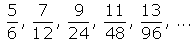
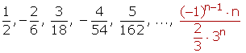

Sequence Worksheets
1Calculate the nth term of the following sequences:
1 8, 3, −2, −7, −12, ...
2 3, 6, 12, 24, 48, ...
3 4, 9, 16, 25, 36, 49, ...
4 5, 10, 17, 26, 37, 50, ...
5 6, 11, 18, 27, 38, 51, ...
6 3, 8, 15, 24, 35, 48, ...
7 −4, 9, −16, 25, −36, 49, ...
8 4, −9, 16, −25, 36, −49, ...
9 2/4, 5/9, 8/16, 11/25, 14/36,...
10
2Calculate the nth term of the following sequences:
1
2 
3 
4 
5 
6
7 
8
9 
10 
11
1
Calculate the nth term of the following sequences:
1 8, 3, −2, −7, −12, ...
3 − 8 = −5.
−2 − 3 = −5.
−7 − (−2) = −5.
−12 − (−7) = −5.
d = −5.
an = 8 + (n − 1) (−5) = 8 −5n +5 = −5n + 13
2 3, 6, 12, 24, 48, ...
6/3 = 2.
12/6 = 2.
24/12 = 2.
48/24 = 2.
r = 2.
an = 3 · 2 n−1
3 4, 9, 16, 25, 36, 49, ...
22, 32, 42, 52, 62, 72, ...
bn = 2 + (n − 1) · 1 = 2 + n − 1 = n + 1
an = (n + 1)2
4 5, 10, 17, 26, 37, 50, ...
22 + 1 , 32 + 1, 42 +1, 52 + 1, 62 + 1 , 72 + 1, ...
an = (n + 1) 2 + 1
5 6, 11, 18, 27, 38, 51, ...
22 + 2 , 32 + 2, 42 + 1, 52 + 2, 62 + 2 , 72 + 2, ...
an = (n + 1)2 − 1
6 3, 8, 15, 24, 35, 48, ...
22 − 1 , 32 − 1, 42 − 1, 52 − 1, 62 − 1 , 72 − 1, ...
an = (n + 1)2 − 1
2, 7, 14, 23, 34, 47, ...
22 − 2 , 32 − 2, 42 − 2, 52 − 2, 62 − 2 , 72 − 2, ...
an = (n + 1) 2 − 2
7 −4, 9, −16, 25, −36, 49, ...
an = (−1)n (n + 1)2
8 4, −9, 16, −25, 36, −49, ...
an = (−1)n−1 (n + 1)2
9 2/4, 5/9, 8/16, 11/25, 14/36,...
There are two sequences:
2, 5, 8, 11, 14, ...
4, 9, 16, 25, 36, ...
The first is an arithmetic sequence with d = 3. The second is a sequence of square numbers.
an = (3n − 1)/(n + 1)2
10
If the sign is ignored, the numerator is an arithmetic sequence with d = 2.
The denominator is an arithmetic sequence with d = 1.
Since the odd terms are negative, multiply by (−1)n.
2
Calculate the nth term of the following sequences:
1
The numerator is constant.
The denominator is an arithmetic sequence with d = 1.

2 
The numerator is an arithmetic sequence with d = 1.
The denominator is an arithmetic sequence with d = 1.

3 
For this sequence, simplify some of the fractions.
The numerator is an arithmetic sequence with d = 1.
The denominator is an arithmetic sequence with d = 1.

4 
If the sign is ignored, it is an arithmetic sequence with d = 1.
Since the odd terms are negative, multiply by (−1)n.
5 

If the sign is ignored, the numerator is an arithmetic sequence with d= 1.
The denominator is an arithmetic sequence with d = 1.
Since the even terms are negative, multiply by (−1)n+1.
6
It is an oscillating sequence.
The odd terms are an arithmetic sequence with d = 1.
The denominator of the terms form an arithmetic sequence with d = 1.
7 
If the sign and the exponent is ignored, there is an arithmetic sequence with d = 1.
Since the terms are to the square, raise the general term to the square.
Since the terms are squared, the nth term has to be squared.
Since the odd terms are negative, multiply by (−1)n.

8

The numerator of the odd terms form an arithmetic sequence with d = 1.
Since the terms are to the square, raise the general term to the square.
The first term in the denominator (ignoring the square) is an arithmetic sequence with d = 1 (not counting the terms pairs).
9
The numerator is an arithmetic sequence with d = 2.
The denominator is a geometric sequence with r = 2.
10 
If the sign is ignored, the numerator is an arithmetic sequence with d = 1.
The denominator is a geometric sequence with r = 3.
Since the even terms are negative, multiply by (−1)n+1.
